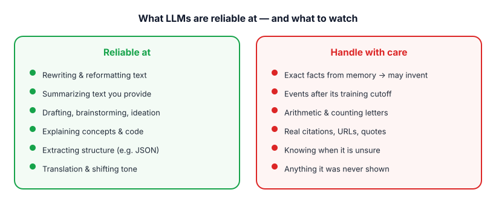
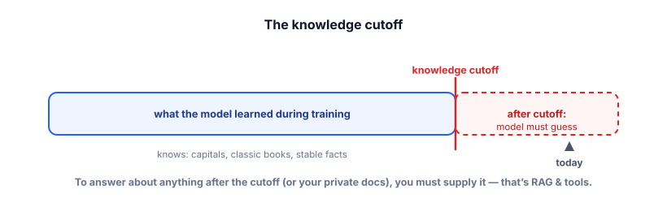
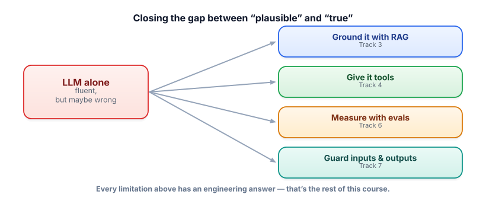

What LLMs can & can't do
This is the lesson that keeps you employed. Knowing exactly where these models shine and where they quietly fail is the difference between a demo that wows and a product that embarrasses you in front of users. It’s also the most-probed area in interviews.
Why limits matter more than capabilities
It’s easy to be impressed by what LLMs can do. The professional skill is knowing what they can’t — because that’s where products break. Almost every limitation follows directly from Lesson 1.1: the model predicts plausible next tokens, not true ones. When plausible and true line up, it looks brilliant. When they diverge, it fails confidently. Everything below is a corollary of that one fact.

Hallucination, demystified
A hallucination is when a model produces fluent, confident output that is factually wrong or fabricated — an invented statistic, a non-existent citation, a plausible but fake API method. The crucial reframing: this isn’t the model malfunctioning, it’s the model working exactly as designed. Its job is to produce likely text. When it doesn’t “know” something, it doesn’t fall silent — there’s no mechanism for that. It generates the most plausible-sounding continuation, which can be completely made up.
A model’s confidence is uncorrelated with its correctness. It states fabricated facts in exactly the same fluent, assured tone as real ones, because both are just “likely text.” You cannot tell a hallucination from a fact by how sure the model sounds. This is why you never ship an LLM answer to a high-stakes question without grounding or verification.
The knowledge cutoff
Because a model’s knowledge is frozen into its weights at training time (Lesson 1.1), it has a knowledge cutoff: a date after which it knows nothing. Ask about last week’s news, a library released yesterday, or your company’s internal policy, and at best it admits ignorance — at worst, it hallucinates a plausible answer.

And a few more limits that trip people up, all explainable from what you’ve learned:
- Arithmetic & character tasks: the model sees tokens, not digits or letters (Lesson 1.2), so multi-step math and “count the R’s” are genuinely hard without tools.
- No real memory: it only knows what’s in the current context window (Lesson 1.4) — no recall of past sessions unless you re-supply it.
- Prompt sensitivity: small wording changes can shift outputs, because you’re nudging a probability distribution, not querying a fact store.
- Inherited bias: trained on human text, models can reproduce its biases and stereotypes — a real safety concern (Track 7).
The good news: every limit has an engineering answer
Here’s the optimistic punchline, and the map for the rest of this course. None of these limitations are dead ends — each has a well-understood fix, and learning those fixes is applied GenAI engineering.

This uses a small, free, instruction-following model. Watch it confabulate a made-up fact, then watch grounding fix it:
!pip install transformers
from transformers import pipeline
qa = pipeline("text2text-generation", model="google/flan-t5-base") # small, free, instruction-tuned
# 1) UNGROUNDED — it has no idea, but will still answer something
q = "What is the warranty period of the Acme X200 blender?"
print("ungrounded:", qa(q, max_new_tokens=30)[0]["generated_text"])
# 2) GROUNDED — give it the fact and forbid guessing
context = "The Acme X200 blender comes with a 3-year limited warranty."
prompt = f"Context: {context}\n\nUsing ONLY the context, answer. If the answer is not in the context, say 'I don't know'.\nQuestion: {q}"
print("grounded: ", qa(prompt, max_new_tokens=30)[0]["generated_text"])The ungrounded call invents or fumbles an answer; the grounded call reports the real “3-year limited warranty,” because the fact is now in front of it and you’ve told it not to guess. That two-line difference — supply the facts, forbid guessing — is the entire spirit of RAG, which you’ll build for real in Track 3.
- Limits flow from one fact: the model predicts plausible tokens, not true ones.
- LLMs are strong at transforming text you provide, weak at recalling exact facts and knowing their own uncertainty.
- Hallucination is the mechanism working as designed; confidence ≠ correctness.
- The knowledge cutoff means recent events and private data must be supplied, not assumed.
- Every limit has a fix: ground (RAG), tools, evals, guardrails — the rest of this course.
Your legal-research assistant keeps citing court cases that don’t exist — with realistic names and citation numbers. Which fix most directly addresses the root cause?
1. Sort these into “reliable” vs “risky”: (a) summarize this contract I pasted, (b) what’s our refund policy?, (c) translate this paragraph to Spanish, (d) what’s the population of this city right now?, (e) reformat these notes as bullet points.
2. Rewrite this hallucination-prone prompt to be grounded: “What integrations does our product support?”
3. Explain to a skeptical manager why simply telling the model “always be accurate and never make things up” doesn’t solve hallucination.
▸ Show solutions & reasoning
1. Reliable: (a) summarize pasted contract, (c) translate a paragraph, (e) reformat notes — all transform text you provided. Risky: (b) refund policy and (d) current population — both require recalling specific facts the model may not have or that may be outdated. The tell: is the needed information in the prompt, or is the model being asked to remember it? In-prompt → reliable. From memory → risky.
2. Ground it: retrieve your real integrations list and constrain the answer. For example: “Here is our current list of supported integrations: [retrieved list]. Using only this list, answer the user’s question. If something isn’t listed, say it’s not supported.” Now the model is summarizing provided text (its strength) instead of recalling from memory (its weakness).
3. The instruction asks the model to do something it has no mechanism for. It can’t distinguish facts it “knows” from plausible patterns it’s generating — there’s no internal truth-check to switch on. Telling it to “be accurate” changes the style of the text, not its access to truth. Accuracy comes from giving it real information (grounding) and verifying outputs (evals/validation), not from asking nicely. Reliability is an architecture decision, not a prompt phrase.
You can’t eliminate hallucination, but you can drive it down a lot. The toolkit, roughly in order of power:
Ground the model (biggest lever): put the real facts in the context and instruct it to answer only from them — and to say “I don’t know” when they’re absent. A model summarizing provided text is far more reliable than one recalling from memory. Give it tools: for math, call a calculator; for fresh facts, call search; for your data, call your API (Track 4). Don’t ask the model to be a database — let it use one. Constrain and verify the output: ask for citations and check that quoted text actually appears in the sources; validate structured fields; use a second model or rules to flag unsupported claims (Tracks 6–7). Lower the temperature for factual tasks so you’re not adding randomness on top. And design the UX for doubt: show sources, let users verify, and don’t present generated answers as infallible.
The mental model to carry into every project: an LLM is a brilliant reasoner over the information you give it, and an unreliable witness about anything you don’t. Build systems that play to the first half and never depend on the second.
That’s the engine, end to end: tokens, embeddings, context, attention, sampling, and the honest map of strengths and limits. Time to check it stuck — and to see what an interviewer would ask. On to the Track 1 interview check.